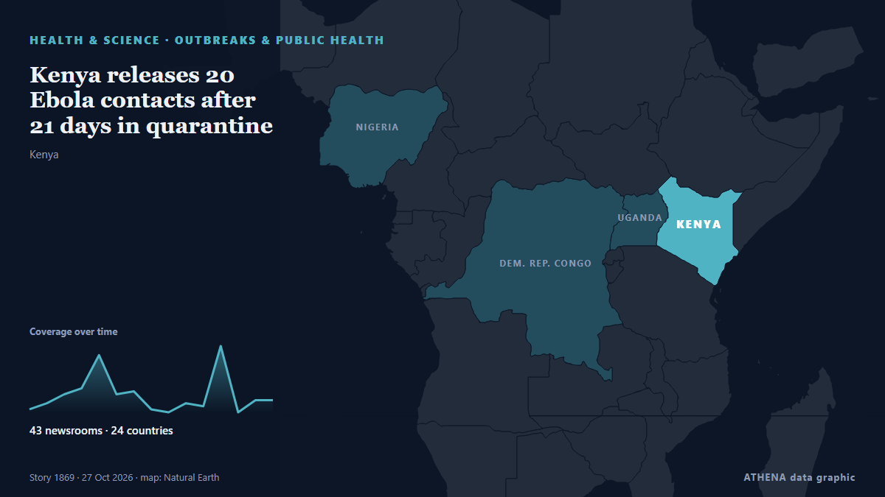

Afrique subsaharienne
Afrique subsaharienne : les derniers événements pays par pays, avec risque, sources et pays selon ATHENA.

Santé et scienceKenya releases 20 Ebola contacts after 21 days in quarantine
Kenya has declared Bundibugyo Ebola a formidable epidemic disease, introducing new rules on screening, isolation, quarantine, contact tracing and safe burials to strengthen outbreak control measures. de The Standard
Poland's president returns as court crisis escalates
Polish President Karol Nawrocki turned back to Poland while en route to Senegal after a far-right ally was suspended as head of the country's top court. de RTÉ News
Attacks kill at least 60 Orthodox Christians in Ethiopia, church says
The Ethiopian Orthodox Church reports that two attacks in Oromia have killed at least 60 Orthodox Christians. de ABC News (International)
Australia hammered by Harmer in Cape Town as South Africa take series 2-1
Chasing a target of 288, Australia were bowled out for 111 in the second session on the final day. de Times of India
Congo's Ebola deaths top 5,000 as fear of continent-wide spread mounts
Data from the Congolese Ministry of Health showed that the disease has killed 5,026 people out of 10,351 infected, at a nearly 50% lethality rate. de Stuff
World marathon champion Peres Jepchirchir suspended for doping: AIU
Peres Jepchirchir, the world marathon champion and Olympic gold medallist, has been provisionally suspended after testing positive for EPO. de Arab News
US, EU and 30 countries warn of famine risk in Sudan, call for aid
Countries also urge Sudan's warring parties to 'lift all impediments on humanitarian assistance'. de Al Jazeera English